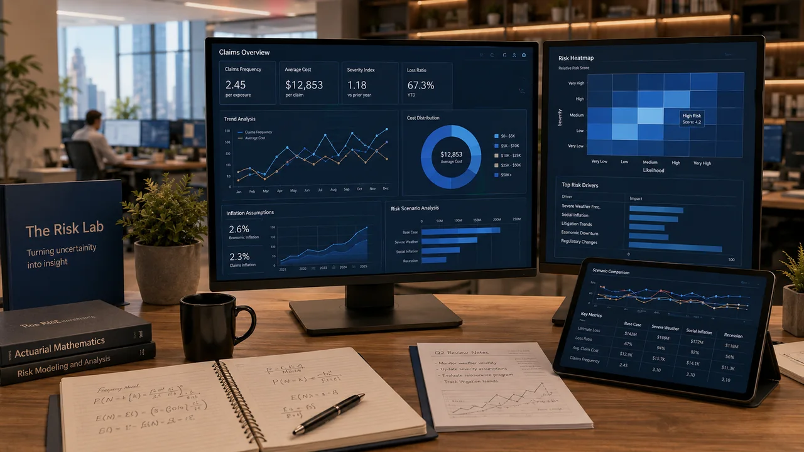

MASTER 2 · ACTUARIAL ENGLISH
M2 · Actuarial English
Five separate course sessions. Choose the session you need below. Session 1 is available now; Sessions 2–5 will be developed progressively.
YOUR COURSE
Choose a session
Exactly as in M1, each session has its own page. Click one full-width session card to open it.
01
M2 · COURSE SESSION
Session 1 · Global Actuarial Communication
International actuarial work · diplomatic professional English · group activity
Available nowOpen Session 1 →
02
M2 · COURSE SESSION
Session 2
Content to be defined together.
Ready to buildOpen Session 2 →
03
M2 · COURSE SESSION
Session 3
Content to be defined together.
Ready to buildOpen Session 3 →
04
M2 · COURSE SESSION
Session 4
Content to be defined together.
Ready to buildOpen Session 4 →
05
M2 · COURSE SESSION
Session 5
Content to be defined together.
Ready to buildOpen Session 5 →